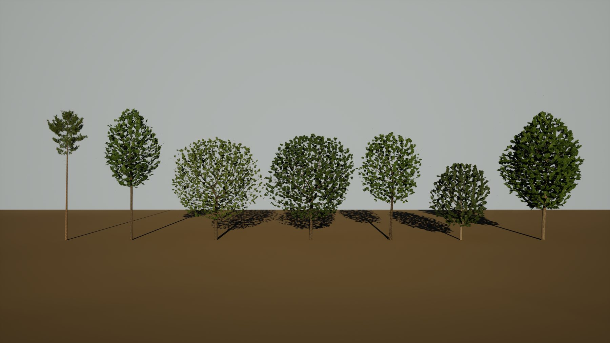
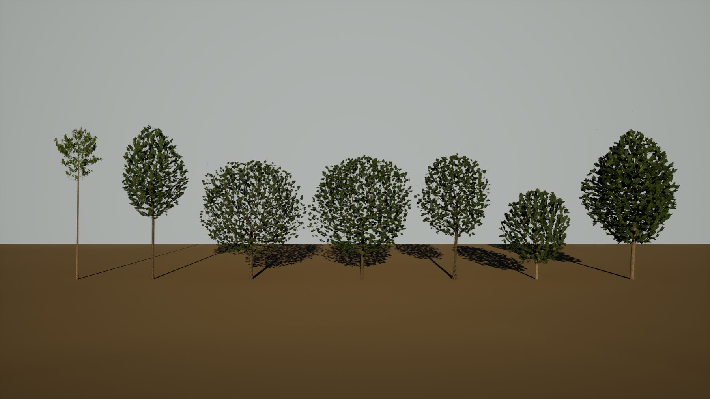
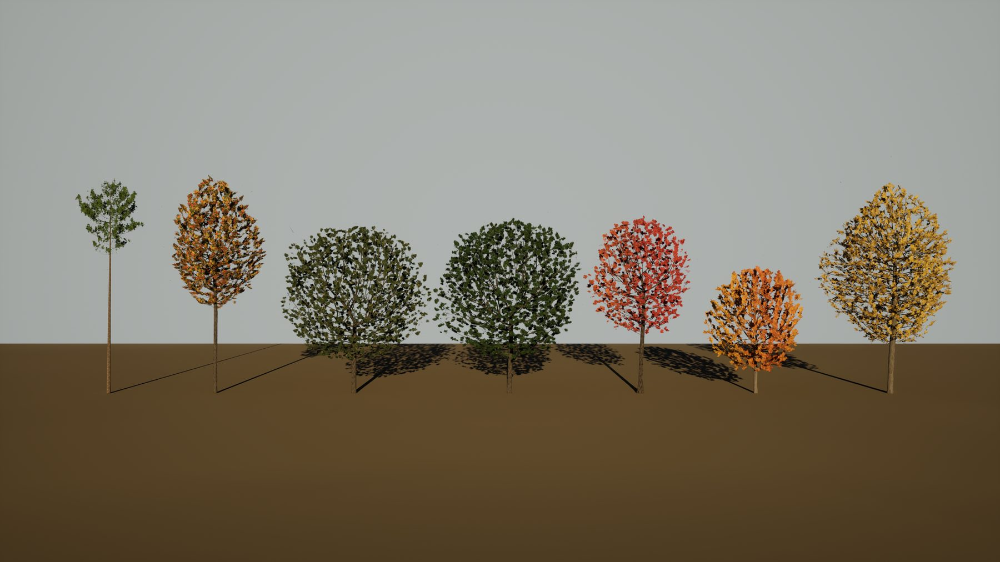
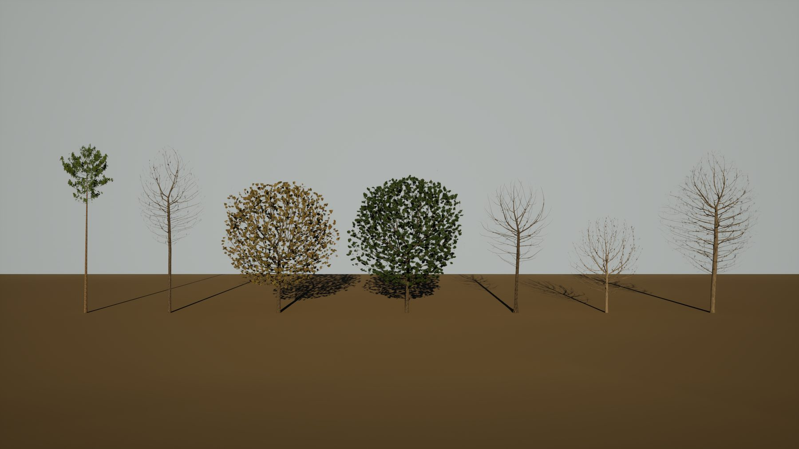

Capra Labs · technical
Pipeline, engines and asset inventory
How a Capra land film is built, and every asset it is built from. Generated from the pipeline's own records, so it changes as the pipeline does.
61tree species live in films
23species built, building or queued
94% → 98%Georgia basal area covered: live → with the queue
24non-tree asset types
90% → 99%western NC covered: live → with the queue
84species designed in total
25procedural bark presets
9crop and cover calendars
Pipeline
Eight stages, one asset lab
Intake and reviewAcquisitionLand modelRealism layerRender and postAsset lab
Engines
The season engine



